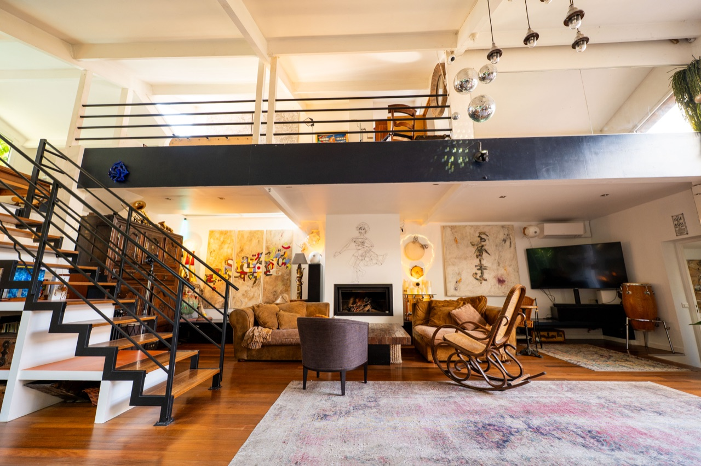

Agnès Bouche Barbare lives and creates in Paris. Her works emerge from a subtle dialogue between wood and pigments, oil and acrylic. Each one takes root in the sensations that a poem or a quotation inspires in her, creating a double reading between text and image. The play of intersections, the juxtaposition of colours and the sobriety of abstraction compose a rhythm, an almost musical movement.
Admitted to the Beaux-Arts de Paris competition, she studied applied arts at the École Boulle, art history at the École du Louvre, then graphic design at the Académie Charpentier, where she completed her training. Twelve years across Europe, notably in Italy and Denmark, led her from fashion styling to design, at the heart of French and Italian creation.
Back in France, she created for twelve years for L'Oréal and its prestigious brands, before dedicating herself entirely to painting. Selected for the first edition of « Révélations » at the Grand Palais, she joined the Maison des Artistes and exhibited twenty works at the Palais de Tokyo in 2014. Always seeking new materials — such as porcelain in sculpture — she became a member of the Ateliers d'Art de France.
Having explored so many forms of creation, she does not stop there: writing and interior decoration become her new grounds for exploration, with hands-on making as her ally. She designed her showroom alone — an atypical place where some of her works find their home, conceived so that guests can recharge there: a pleasure for the eyes and for the soul.

The studio — Paris
With a depth of about 5 cm, Agnès's works merge painting and sculpture. Their size ranges from 40 cm to 3 metres. Made from wood chosen among different species — oak, beech, pine — each piece is cut, smoothed and transformed before receiving successive layers of pigments and mediums.
The pictorial matter becomes flesh: it is in surrender and mastery, the defined and the ethereal, that her hands find freedom. Matte and gloss, shadow and light answer one another, transmitting the impulse to movement.
Each work is born of a poem, a quotation or a text by the artist. These thoughts, echoing the paintings, induce a double reading. Often, ideograms, calligraphies and words of diverse origin (Sanskrit, Japanese, Hebrew, Hindi, Greek, Arabic, Chinese, Persian) meet and overlap, weaving an imaginary link between different peoples and their spiritualities.
For Agnès, thought shapes what the soul seeks to live: everything seems connected, hence this play of intersections. Fascinated by the « human machine », she explores lived themes, such as certain stages of her personal history. Her pictorial matter is born of a tension between surrender and mastery, the defined and the ethereal, bringing matte and gloss, shadow and light into dialogue.
These contrasts propel movement, like feminine energy answering masculine energy. The work engages the senses — sight, touch, imagination — in an almost musical cadence. Rhythm remains a constant source of inspiration.
Agnès believes that every work holds an energetic potential that is shared as a matter of course, for to create in awareness is to be deeply authentic. From this arises the idea of transformation through movement — progression, elevation, union, sharing.
« Far from the beaten path, in this subtle communication, I create in awareness to offer a visible homage to the invisible, a hymn to the intensity of life and… to its infinity. »
Since childhood, my spiritual sensitivity has been shaped by fairly uncommon inner experiences. It happens, among other things, that I communicate in dreams with people who have just left this world. These reminders of our essence beyond appearances have given me not only strength, but a serenity that I transform into creative energy.
Recognising this other dimension of ourselves is a natural human function. To be an artist is to let oneself be guided by the moment, to catch the fleeting sparks of childhood that remain with us, and to enjoy life and its incredible offerings.
« Writing is drawing a door on an impassable wall, and then opening it, » wrote Christian Bobin.

Studio · Works in progress

Studio-Salon · Paris
Paintings, sculptures and in-situ installations permanently inhabit the loft. Come and visit the space — discovering Agnès's works is part of the experience.